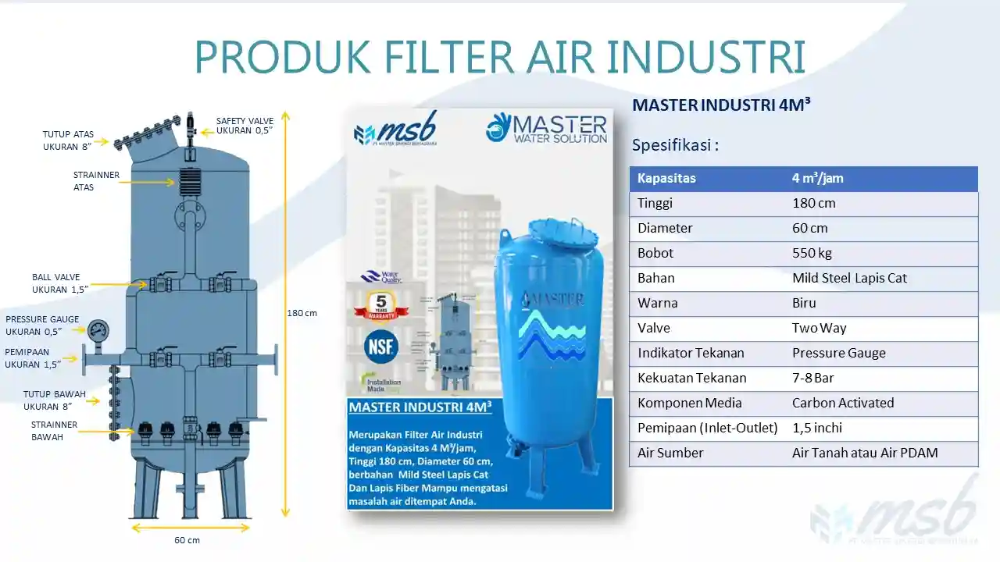

FILTER AIR MASTER INDUSTRI 4M³
Dirancang untuk kebutuhan industri dalam menyediakan air bersih, jernih, dan bebas kontaminan.

Filter Air MASTER INDUSTRI 4M³
Rp. 65.500.000
Cocok untuk UKM, restoran, laundry, dan industri kecil yang membutuhkan air bersih bebas kontaminan.
- Kapasitas: 4 m³/jam
- Tinggi: 180 cm
- Diameter: 60 cm
- Bobot: 550 kg
- Bahan: Mild Steel Lapis Cat
- Warna: Biru
- Valve: Ball Valve
- Indikator Tekanan: Pressure Gauge
- Kekuatan Tekanan: 7–8 Bar
- Media Filter: Carbon Activated
- Pemipaan: 1.5 inch (Inlet-Outlet)
- Air Sumber: Air Tanah atau PDAM
Deskripsi Produk Filter Air MASTER INDUSTRI 4M³
Filter Air MASTER INDUSTRI 4M³ adalah sistem penyaringan air berkapasitas 4.000 liter per jam yang dirancang untuk keperluan industri skala menengah. Menggunakan material mild steel berkualitas tinggi dan media karbon aktif, filter ini mampu mengatasi lumpur, karat, bau, warna, dan logam berat.
Spesifikasi Detail
Tahapan Penyaringan
- Pra-filtrasi: Menyaring partikel besar seperti pasir dan lumpur.
- Adsorpsi: Menghilangkan bau, warna, dan zat organik melalui karbon aktif.
- Reduksi Kimia: Menyaring klorin, besi, dan mangan.
- Stabilisasi: Memastikan tekanan tetap stabil dengan pressure gauge.
Partikel yang Dapat Disaring
- Pasir, lumpur, sedimen
- Karat dan partikel logam
- Bau dan rasa tidak sedap
- Klorin dan zat organik
- Logam berat seperti Fe dan Mn
Penggunaan Ideal
- Usaha laundry & hotel
- Restoran dan dapur komersial
- F&B dan pabrik kecil
- Kantor dan fasilitas umum
Perawatan Filter
- Backwash: Setiap satu minggu 2 kali
- Cek Tekanan: Monitor pressure gauge secara rutin
- Ganti Media: Karbon aktif tiap 12–18 bulan
- Periksa: Valve dan pipa berkala
Layanan MASTER
- Maintenance berkala & penggantian media
- Pengecekan per 4 bulan & uji laboratorium
- Respon cepat servis dan perbaikan
- Konsultasi teknis gratis
Produk Lainnya
- Filter Air M300 Automatic – Untuk rumah tangga
- Filter Air Minum Yamaha – Untuk air siap minum
Kenapa Pilih MASTER?
- Produk bergaransi dan terpercaya
- Dukungan teknisi profesional
- Kustomisasi sesuai kebutuhan air
Kesimpulan
Filter Air MASTER INDUSTRI 4M³ adalah solusi tangguh dan efisien untuk industri yang mengandalkan air bersih setiap hari. Hubungi kami sekarang untuk konsultasi atau penawaran.
Pertanyaan Umum
Berikut adalah pertanyaan yang sering diajukan terkait penggunaan dan keunggulan Filter Air Industri Master 4m³.
Berita Terbaru
Informasi terkini seputar filter air rumah tangga, industri, dan teknologi air bersih terbaik di Indonesia.

Pemasangan Filter Air Master M300 di PT. YKK Cibitung | Master Filter Air
Solusi pemasangan filter air industri terbaik di PT. YKK Zipper Indonesia Cibitung. Gunakan Filter Air Master M300 Automatic untuk air bersih dan higienis.
Selengkapnya
Filter Air Rumah Tangga Terbaik untuk Kesehatan Keluarga
Instalasi Filter Air Master M300 Automatic di BSD Tangerang terbukti efektif menyaring air sumur yang keruh, mengandung zat besi, dan bau tidak sedap demi kesehatan keluarga.
Selengkapnya
Instalasi Filter Air Master Industri di Hotel untuk Air Bersih dan Bebas Bau
Filter Air Master M300 digunakan di Hotel Azana Two K Bengkulu untuk menjaga kualitas air tetap higienis, jernih, dan aman bagi seluruh tamu hotel dan operasional harian.
SelengkapnyaAbout us

PT. Master Sinergi Bersaudara adalah perusahaan terpercaya di Indonesia yang bergerak di bidang pengolahan air bersih dan penjernih air minum untuk kebutuhan rumah tangga, komersial, dan industri.
Kami memiliki pengalaman melayani berbagai sektor seperti industri makanan dan minuman, hotel, rumah sakit, dan tekstil, dengan cakupan layanan di seluruh wilayah Indonesia.
Copyrights © 2019 - MASTER FILTER PENJERNIH AIR MURAH & TERBAIK
Distributed By - PT. MASTER SINERGI BERSAUDARA